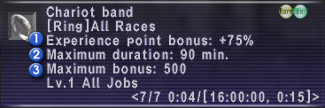

A new Chains of Promathia region known as “Limbus” is now available for exploration.
“Temenos” and “Apollyon,” the two areas within the region, can be accessed after meeting certain requirements. These areas have no relation to the conquest results, and will not be displayed under “Region Info.”
*Limbus
The areas of Temenos and Apollyon are divided into several different routes. Each separate route can be entered by a party/alliance (maximum of 18 people) and occupied exclusively for a pre-determined length of time.
*Entering Limbus
The following requirements must be met before Limbus can be accessed:
Ability to travel to Al’Taieu
Be in possession of two specific key items
Three days have passed since your last foray into Limbus
*Obtaining the Key Items
One of the key items necessary for entering Limbus can be obtained after fulfilling the conditions set by a certain NPC. The second key item is obtainable by defeating a certain monster within the Al’Taieu area.
There are several different types of key items, with each item corresponding to a specific area and route. These key items will be lost upon entering Limbus, but can be reacquired after a set period of time has passed.
Certain types of treasure obtained from defeating monsters in Limbus can be traded to a new NPC for items.
The following changes have been made to the Fellowship (NPC called with a signal pearl) system:
-Several quests that raise the level limit, etc. of your adventuring fellow have been added.
-The variety of weapons and armor available to your adventuring fellow has been expanded.
-The behavior of adventuring fellows has been adjusted.
-More options have been added to the Rendezvous Point menu.
-The items, and order of items, required to change the weapon wielded by your adventuring fellow have been changed as follows:
Xiphos -> Bronze Sword
Bronze Sword -> Xiphos
Tachi -> Nodachi
-New adventuring fellow combat styles have become available.
-Your adventuring fellow will now have an HP bar displayed when called into the field.
-The areas where an adventuring fellow can be called have been expanded.
-An action command window is now available when targeting your adventuring fellow. The menu contains the following options:
Talk
Magic
Abilities
Items
Trade
Disband
During the lost chocobo quest, the time spent riding will now be displayed after entering each new area.
There are now more items available through mining or harvesting in the following areas:
West Sarutabaruta/Yuhtunga Jungle/Yhoator Jungle/Giddeus/Zeruhn Mines/Korroloka Tunnel
The one-way door in the entrance to the Grand Palace of Hu'Xzoi will now be accessible from both sides after progressing in the Chains of Promathia story.
The number of dolls that can be called up by the spheroid family of monsters has been restricted (except for certain types of spheroids).
The number of elementals that can be summoned by the Aern family of monsters has been restricted.
When engaging a monster with auto-attack, melee weapon skills will no longer improve unless at least one point of damage is inflicted.
The behavior of certain notorious monsters in Al'Taieu has been adjusted.
An issue wherein players not participating in an expeditionary force mission were able to attack the pets of the expeditionary force monsters has been addressed.
New enchantment items have been introduced that give a bonus to the amount of experience or limit points earned. These items can be obtained through the exchange of conquest points, but only one type of this item can be possessed at a time. Also, the bonus offered by the enchantment only lasts until the maximum duration has been reached, or the maximum number of bonus points has been obtained.

1. Experience Point Bonus
This refers to the rate at which bonus experience points will be earned. For example, when using the enchantment on the “Chariot band” (75% bonus), you will earn an extra 75 experience points when defeating a monster worth 100 experience points, for a total of 175 experience points earned.
2. Maximum Duration
This refers to the amount of time the bonus from the enchantment will last. Once this period of time has passed, the enchantment will fade, regardless of the amount of bonus experience points earned.
3. Maximum Bonus
This refers to the maximum number of bonus experience points that can be earned while the enchantment is in effect. The enchantment will fade once this number has been reached.
It is possible to fully recharge both the Empress band and the Chariot band in exchange for conquest points by trading the item to a conquest guard of your nation (including outpost guards). This type of item can only be purchased or recharged once during the period between each conquest results tally.
The bonus from these items will not affect the amount of experience earned through ENM quests or the use of items such as Miratete's Memoirs.
A new option allowing adventurers to store equipment and furnishings obtained from special events has been introduced. Conditions are as follows:
-Special equipment and furnishings of both normal and high quality may be stored. It is not possible to trade several of these items at once, however.
-A key item for proof of storage will not be provided for stored special event items. It is possible to check which items have been stored by speaking with the NPC.
-A fee of 500 gil must be paid to retrieve stored items.
-Enchanted items will be set to the maximum recast time when retrieved from storage.
-Enchanted items with a limited number of uses cannot be stored.
-Only yukata specific to the character’s gender can be stored.
New navigational charts have been added. Trading the chart to the “???” found at the point described by the item will begin an event. These charts can be obtained by completing the “Inside the Belly” quest. These events will be fishing-related, so don’t forget to bring a rod and some bait!
It is now possible to see a list of recipes relevant to a player’s synthesis skill rank by speaking with a guild NPC.
"Metal Ensorcellment" has been added to the key items available through fulfilling guild trading contracts.
New synthesis and desynthesis recipes have been added.
New pets have become available for the beastmaster ability “Call Beast.” The new items and their usable levels are as follows:
| Item | Item Level |
| Grasshopper Broth | 28 |
| Noisy Grasshopper Broth | 53 |
| Mole Broth | 33 |
| Lively Mole Broth | 58 |
| Blood Broth | 43 |
| Clear Blood Broth | 63 |
| Antica Broth | 38 |
| Fragrant Antica Broth | 63 |
The effects when using the following items have been adjusted:
Mist Crown/Mist Tunic/Mist Mitts/Mist Trousers/Mist Pumps/Stoneskin Torque/Blink Band/Haste Belt/Reviler's Helm/Palmer's Bangles/Powder Boots/Gargoyle Boots/Root Sabots/Melt Claws/Melt Dagger/Melt Knife/Melt Baselard/Melt Kukri/ Melt Katana/Messhikimaru/Twicer
The following item names have been changed:
Tarbazin +1 -> Tabarzin +1
Jaeger Mantle -> Jaguar Mantle
Panacaea -> Panacea
An issue wherein long character names would be split onto separate lines on the character selection screen has been addressed. All character names will now be displayed on one line.
The following changes have been made to Ballista.
-New temporary items have been added.
-"Remedy voucher," " Panacea voucher," and "smelling salts voucher" have been added to the list of key items obtainable with Ballista Points.
-Fewer Ballista Points are now required to obtain certain vouchers.
-The effective range of powers accessible through the summoner ability "Blood Pact" has been extended. Certain powers will not be affected.
-The duration of the resistance effect to the bard song "Lullaby" has been increased.
-The equipment-change penalty has been altered for the Ammo slot.
-An issue in which Ballista participants could not draw their weapons while being hit repeatedly by ninjutsu attacks, etc. has been addressed. Players are no longer able to disable others by employing the use of attacks in frequent succession.
-The message that appears when using the "examine" command during Ballista has been changed to "(player's name) checks your Ballista data."
-The maximum number of Ballista Points that a player can have has been increased from 1000 to 2000.
-The number of Ballista Points required to reserve "Diorama Abdhaljs - Ghelsba" has been reduced from 200 to 100.
-It is now possible to set "Diorama Abdhaljs - Ghelsba" to Ballista Royale rules. Maximum level, minimum level, and entry type must be specified before the match. Restrictions on the number of participants per side and job limitations will also not be set. The MC may change various match rules even while under the Ballista Royale rules setting.
-When using Ballista Royale rules, certain temporary items will no longer be available.
-Players can now use the "Ballista Band" under Ballista Royale rules.
The following issues, confirmed after the version update on July 19, 2005, have been addressed.
-The order in which the Fellow NPC's dagger weapon skills "Viper Bite" and "Gust Slash" were made available has been reversed.
-An issue with the ranger job ability "Eagle Eye Shot" caused by the damage/accuracy adjustments to ranged attacks has been addressed. The job ability now functions properly.
-The effect of the ranger job ability "Shadowbind" will no longer be canceled by the white mage spell "Erase."
-An issue in which players could not cancel the effects of the avatar Titan's Blood Pact ability "Earthen Ward" with other spells has been addressed.